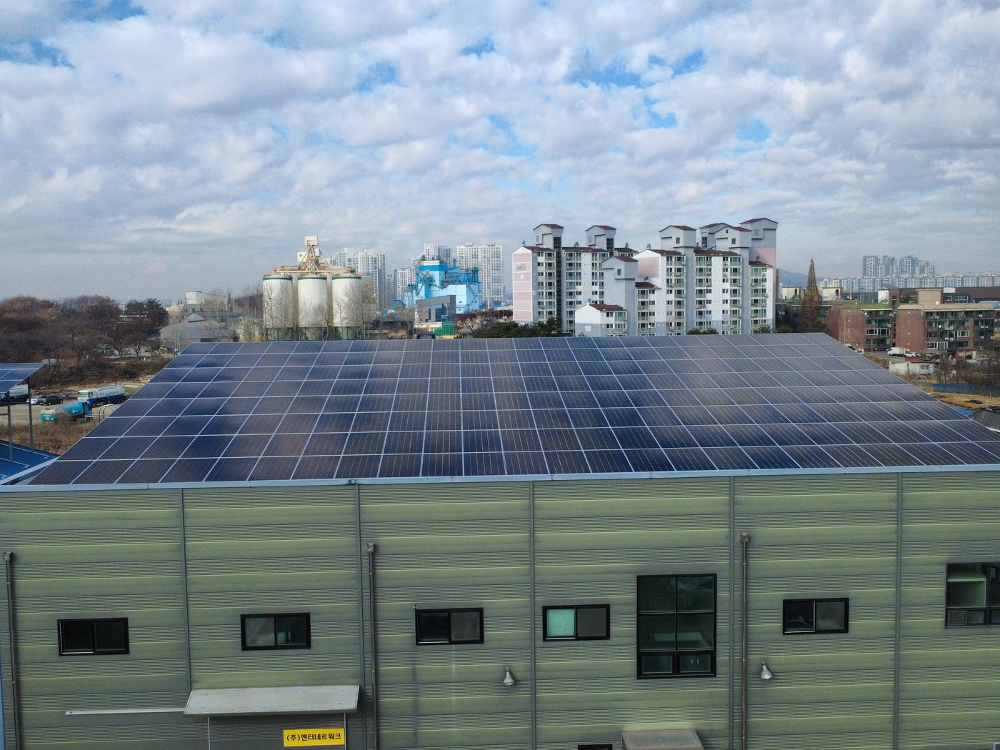
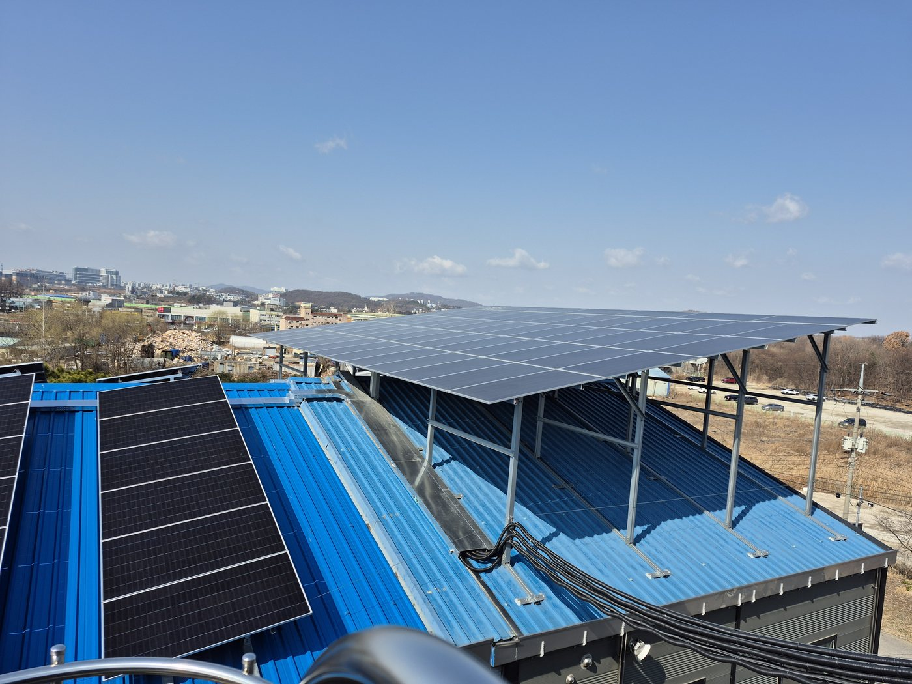
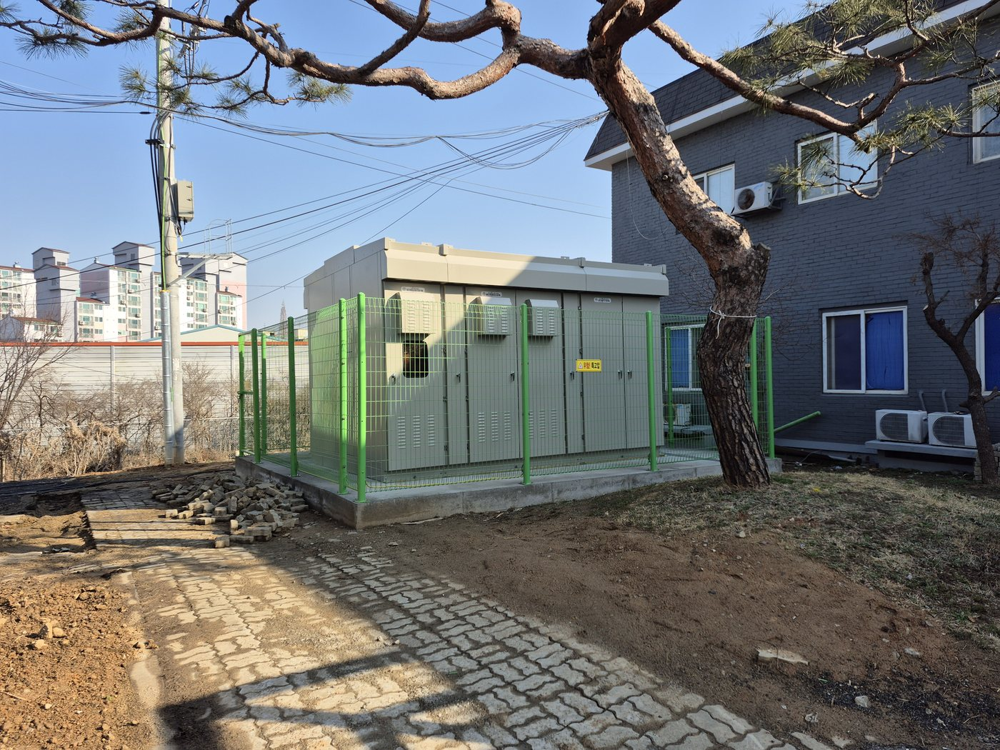
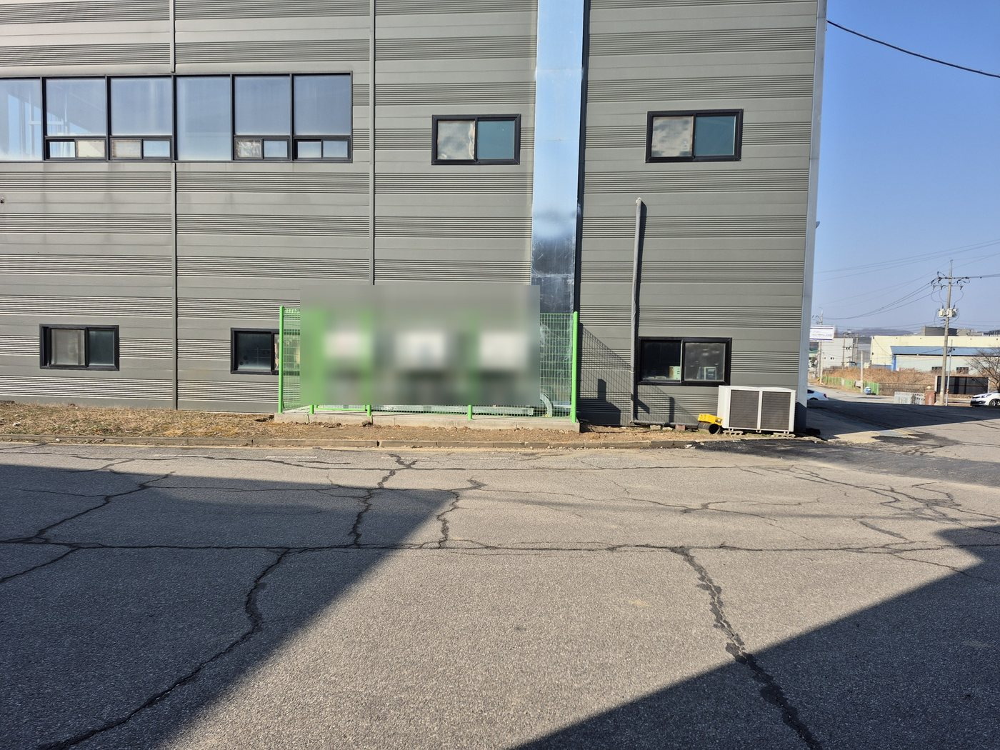

천안 A 공장 지붕 태양광 558 kW: 36년 된 슬레이트 지붕에서 한전 PPA 상업운전까지
충남 천안의 한 공장 지붕 6개 동에 558 kW를 올리고 한전과 전력구입계약(PPA)을 맺어 2026년 3월 20일 상업운전을 시작했습니다. 지붕 검토부터 인허가, 시공, 상업운전까지 저희가 맡았습니다.
발행 2026-11-12 · 갱신 2026-11-14
현장 개요
- 유형
- 공장 지붕 태양광(한전 PPA, 1,000 kW 이하 시장외 거래)
- 지역
- 충남 천안
- 용량
- 558 kWp(모듈 정격)
- 한 일
- 지붕 검토, 설계, 인허가, 시공, 상업운전 서류
- 상업운전
- 2026년 3월 20일
- 지붕
- 공장 6개 동, 일부는 1989년 준공 슬레이트 지붕
고객 이름, 금액, 지번은 싣지 않습니다. 회사 이름은 'A 제조공장'처럼 적습니다.
준공 사진

준공한 공장 지붕 어레이와 시가지 
구조물과 모듈을 마친 12월의 지붕(드론) 
지붕 위에서 내려다본 어레이 배치(드론) 
옆 동에서 본 지붕 어레이 
옥외 수배전반과 울타리 
건물 측면으로 옮겨 설치한 인버터
고객사 보호를 위해 회사 이름이 보이는 부분은 가렸습니다. 사람이 나오는 사진은 싣지 않았습니다.
진행 순서
설계 → 인허가 → 시공 → 사용전검사와 상업운전. 날짜는 인허가 서류 원문 기준입니다.
- 설계2025년 4월~8월
드론으로 지붕을 찍고 슬레이트 지붕 보강안 3가지(강판 덧씌움, 철거 후 재시공, 단열 보드와 방수 시트 위 설치)를 비교. 설치할 동이 바뀌어 발전사업 변경허가(8월 21일, 737.1 kW → 560.16 kW).
- 인허가2025년 4월~9월
발전사업허가(4월 1일) → 공작물축조신고(5월 28일 접수, 7월 1일 수리, 장소 변경으로 취소) → 대수선허가(7월 29일 신청, 9월 1일 허가, 공작물축조신고 함께 처리) → 한전 PPA 서류 접수(8월 27일) → 전기안전공사 사전기술검토 보완 5가지 사흘 만에 조치(9월 5일~8일) → 공사계획신고와 착공신고 같은 날(9월 17일), 착공 수리(9월 25일).
- 시공2025년 10월~2026년 1월
10월 건물 보강(대수선) → 11월 25일 공사계획 변경신고로 기간 연장 → 12월 11일 자재 반입, 12월 22일까지 여섯 동 구조물과 모듈(결빙 때문에 오전 10시 시작한 날도) → 1월 전기공사, 인버터와 송배전반, 리클로저, 접지, 22.9 kV 케이블 단말, 절연저항과 개방전압 확인, 정밀안전진단.
- 사용전검사·
운전 2026년 2월 11일~4월 7일2월 11일 사용전검사 합격(22,900 V 558 kW) → 3월 10일 한전 전력구입계약 → 3월 15일 계통연동시험(재생에너지 감시·
제어 단말장치) → 3월 20일 보호계전기 정정값 입력, 계량기 봉인, 상업운전 → 4월 7일 사업개시신고.
설비 구성
| 항목 | 값 |
|---|---|
| 모듈 | 720 W × 775장 = 558 kWp |
| 직병렬 | 인버터 A~D: 16직렬 × 10병렬 = 160장씩, 인버터 E: 15직렬 × 9병렬 = 135장 |
| 인버터 | 110 kW × 5대, 전기안전공사 협의를 반영해 건물 측면 설치 |
| 변압기 | 몰드형 700 kVA, 22.9 kV / 380-220 V |
| 연계 | 22.9 kV 지중선로 60 ㎟, VCB 24 kV 630 A |
| 지붕 보강 | 슬레이트 지붕 보강안 3가지 비교, 한 동은 보· |
| 판매 방식 | 한전 '신· |
558 kW와 560.16 kW가 함께 보이는 이유: 발전사업 변경허가 용량은 720 W × 778장 = 560.16 kW이고, 실제 시공은 775장 = 558 kW입니다. 사용전검사 확인증과 공사계획 변경신고는 558 kW 기준입니다.


이 현장에서 배운 것
- 지붕 검토 결과가 설치할 동과 용량을 정하고, 그것이 변경허가, 공작물축조신고, 대수선허가로 이어집니다. 지붕과 용량을 먼저 단단히 정해야 서류를 두 번 내지 않습니다.
- 500 kW 이상이면 사전기술검토를 받습니다. 작업공간 배치도, 옥외설비 침수방지와 울타리, 송배전반 단면도, 접지단자함 상세, 모듈 배선 극성 표시를 처음 도면에 넣어 두면 보완 없이 지나갑니다.
- 한전 PPA 서류는 공사 전에 접수하고, 인버터 현장설정 확인서나 계량기 검정확인서처럼 기기 업체에서 받는 서류는 발주 때 미리 요청합니다.
- 계통연동 단말장치의 전원, 접지, 통신선은 발전사가 미리 깔아 두면 연동시험 시간이 줄어듭니다.
자주 묻는 질문
558 kW인데 왜 허가증에는 560.16 kW라고 적혀 있나요?
변경허가는 720 W 모듈 778장(560.16 kW) 기준이고, 실제로는 775장(558 kW)을 시공했습니다. 사용전검사와 공사계획 변경신고는 558 kW로 받았습니다.
오래된 슬레이트 지붕에도 태양광을 올릴 수 있나요?
지붕 검토가 먼저입니다. 이 현장은 1989년 준공 슬레이트 지붕이라 보강안 3가지를 비교했고, 한 동은 보와 기둥을 늘리는 대수선허가를 받은 뒤 올렸습니다. 석면 슬레이트는 천공과 보행이 위험하므로 설치 동을 바꾸기도 했습니다.
한전 PPA로 전기를 팔기까지 얼마나 걸렸나요?
2025년 4월 발전사업허가부터 2026년 3월 20일 상업운전까지 약 1년입니다. 시공 자체는 2025년 12월부터 2026년 1월까지였고, 나머지는 인허가와 한전 서류였습니다.